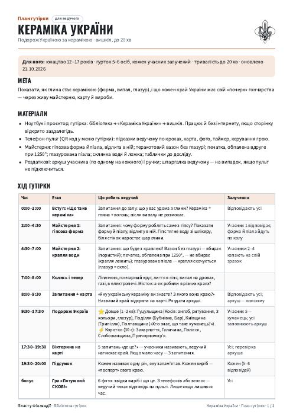
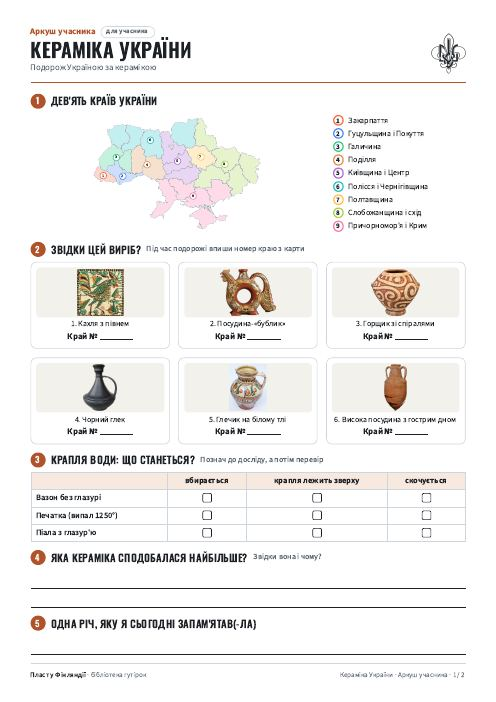
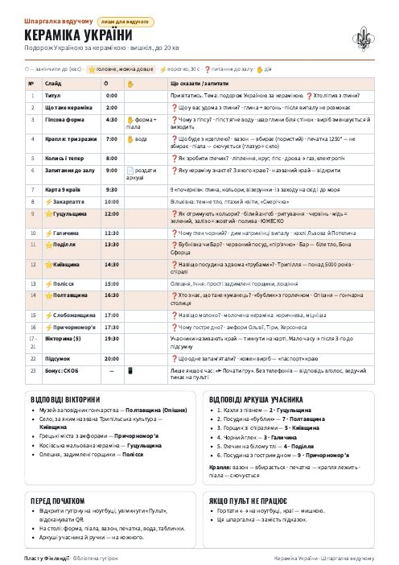
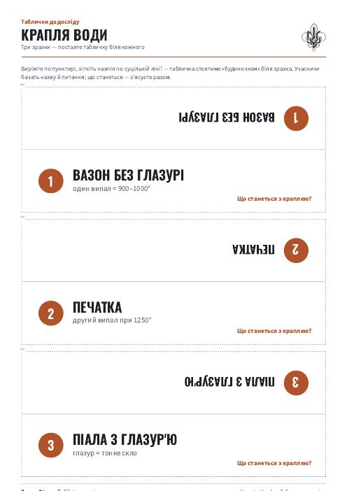

Кераміка України · вишкіл, до 20 хв
Усе паперове до гутірки — в одному стилі: план для ведучого, аркуш для кожного учасника, шпаргалка з відповідями й таблички до досліду. Натисніть «PDF», щоб відкрити й надрукувати.

Для ведучого · 2 сторінки
Мета, матеріали, хід гутірки по хвилинах, як залучити всіх 5–6 учасників, слова, які треба пояснити, і що робити, коли час закінчується.

Кожному учаснику · 2 сторінки, можна з двох боків

Лише для ведучого — є відповіді · 1 сторінка
Усі слайди з часом «закінчити до», що сказати й запитати; відповіді вікторини й аркуша учасника. Знадобиться, якщо пульт не підключиться.

Для майстерні · 1 сторінка
Три таблички «будиночком» до досліду «Крапля води»: вазон без глазурі, печатка (випал 1250°), піала з глазур'ю. Виріжте по пунктиру, зігніть навпіл і поставте біля зразків.